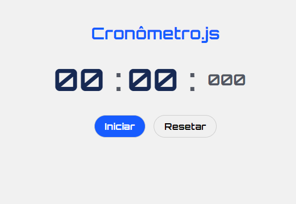
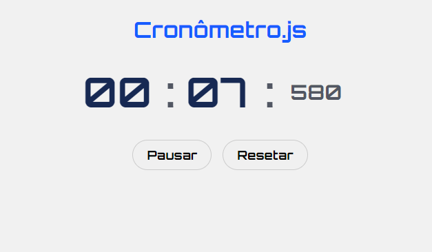
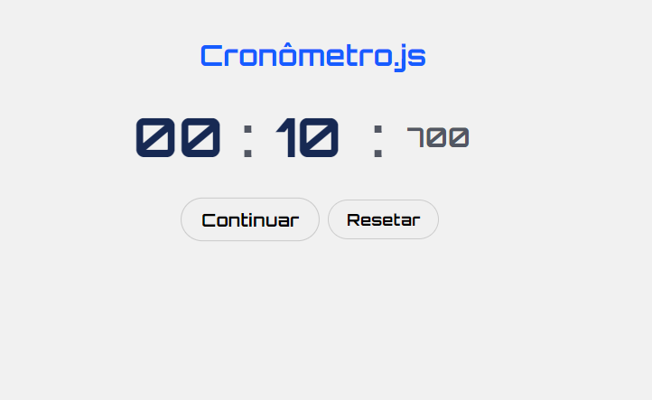

Apresento a seguir uma seleção de projetos que desenvolvi, abrangendo tanto o desenvolvimento de backend quanto de frontend, adquiridos ao longo dos meus cursos e atividades de aprendizagem. Explore-os abaixo:
Cronômetro.js
Criei um cronômetro web interativo usando JavaScript, HTML e CSS. Este projeto permite que os usuários iniciem, parem e zerem o cronômetro, além de acompanhar o tempo decorrido com precisão. Foi ums dos meus primeiros projetos. Baseado na aula do youtube do professor Matheus Battisti do (horadecodar).
  
Jogo de xadrez em Java
Neste projeto do jogo de xadrez do curso de Java ministrado pelo Professor Nelio Alves (DevSuperior), implementei toda a lógica das peças, movimentação de cada uma delas e tratamento de exceções. Utilizei conceitos como encapsulamento, construtores, polimorfismo (método toString), sobrecarga, matrizes, enums, downcasting, membros estáticos, princípios de herança e métodos abstratos para criar uma implementação completa e funcional do jogo de xadrez.


Orlando City website
Desenvolvi um site responsivo para o time de futebol Orlando City, combinando minhas habilidades em HTML, CSS, Bootstrap, jQuery e JavaScript. O projeto foi criado em colaboração com os professores Glaucio Daniel Souza Santos e João Rangel da Hcode Treinamentos. Design moderno e atraente com layout responsivo para uma ótima experiência em dispositivos móveis e desktop. Utilização do framework Bootstrap para agilizar o desenvolvimento e garantir uma interface consistente. Integração do jQuery para funcionalidades interativas e animações.

Jogo da memoria cavaleiros do zodiaco
O "Jogo da Memória dos Cavaleiros do Zodíaco" é um projeto de desenvolvimento web que combina elementos de HTML, CSS e JavaScript para criar uma experiência interativa baseada na popular série de anime "Cavaleiros do Zodíaco". O jogo desafia os jogadores a testarem sua memória, combinando pares de cartas com imagens dos personagens e símbolos icônicos da série.
Recursos Principais:
Tabuleiro de Cartas: O jogo apresenta um tabuleiro de cartas viradas para baixo, onde os jogadores podem clicar para revelar as imagens ocultas.
Cartas Personalizadas: As cartas são personalizadas com imagens de Cavaleiros do Zodíaco, tornando o jogo mais envolvente para os fãs da série.
Lógica do Jogo: O jogo é construído com lógica JavaScript que permite que os jogadores escolham duas cartas para tentar encontrar pares correspondentes. Se as cartas forem correspondentes, elas permanecem viradas para cima; caso contrário, elas são viradas novamente para baixo.

Workshop-springboot3-jpa
Este projeto envolve a criação de um aplicativo Spring Boot em Java, implementando um modelo de domínio robusto e seguindo as melhores práticas de desenvolvimento de software. A estrutura do projeto é organizada em camadas lógicas distintas, incluindo recursos (resource), serviço (service) e repositório (repository), garantindo um design escalável e de fácil manutenção. Este projeto foi desenvolvido sob a orientação e instrução do Professor Nelio Alves, da plataforma DevSuperior, que proporcionou uma sólida compreensão das melhores práticas de desenvolvimento e da arquitetura de aplicativos Spring Boot. A orientação do professor foi fundamental para o sucesso deste projeto.
Principais Funcionalidades e Componentes:
Configuração do Banco de Dados: Foi configurado um banco de dados de teste utilizando o H2, que é uma opção popular para desenvolvimento ágil e testes unitários.
População do Banco de Dados: Foram implementadas operações CRUD (Create, Retrieve, Update, Delete) para interagir com o banco de dados, permitindo a criação, leitura, atualização e exclusão de registros.
Tratamento de Exceções: O projeto incorpora um tratamento abrangente de exceções para lidar com situações imprevistas e fornecer feedback significativo ao usuário.
Tecnologias Utilizadas:
Spring Boot: A estrutura Spring Boot foi escolhida para facilitar o desenvolvimento de aplicativos Java com configuração mínima, acelerando o processo de desenvolvimento.
Java: A linguagem de programação Java é a base do projeto, garantindo a portabilidade e a robustez do código.
JPA / Hibernate: A tecnologia JPA em conjunto com o Hibernate foi empregada para facilitar o mapeamento objeto-relacional e a interação com o banco de dados.
Maven: O Maven foi usado como gerenciador de dependências para garantir a fácil configuração e distribuição do projeto.


Projeto-MongoDB-com-Spring-Boot
Este projeto foi uma exploração profunda do uso do MongoDB em conjunto com o Spring Boot para criar um aplicativo que abrange conceitos-chave do paradigma orientado a documentos. O foco principal era entender as principais diferenças entre bancos de dados orientados a documentos e bancos de dados relacionais e implementar operações de CRUD (Create, Retrieve, Update, Delete) em um ambiente MongoDB. Este projeto tambem foi desenvolvido sob a orientação e instrução do Professor Nelio Alves, da plataforma DevSuperior.
Objetivos e Aprendizados:
Compreensão dos Paradigmas de Dados: O projeto permitiu uma análise aprofundada das principais diferenças entre bancos de dados orientados a documentos, como o MongoDB, e bancos de dados relacionais. Isso incluiu a apreciação das vantagens e desvantagens de cada paradigma.
Operações de CRUD: Foi implementada uma funcionalidade completa de CRUD para gerenciar documentos no MongoDB. Isso envolveu a criação, leitura, atualização e exclusão de documentos em uma coleção.
Decisões de Design para Banco de Dados: O projeto desafiou a tomar decisões de design importantes ao modelar dados em um banco de dados orientado a documentos. Isso incluiu a escolha de estruturas de dados adequadas, considerando a escalabilidade e a eficiência das consultas.
Associações Entre Objetos: O projeto abordou a implementação de associações entre objetos, tanto por meio de objetos aninhados quanto de referências. Isso permitiu compreender como os dados são organizados e relacionados em um ambiente de banco de dados orientado a documentos.
Consultas com Spring Data e MongoRepository: Utilizou-se o Spring Data e o MongoRepository para realizar consultas eficazes no MongoDB, explorando a capacidade de consulta flexível do MongoDB.